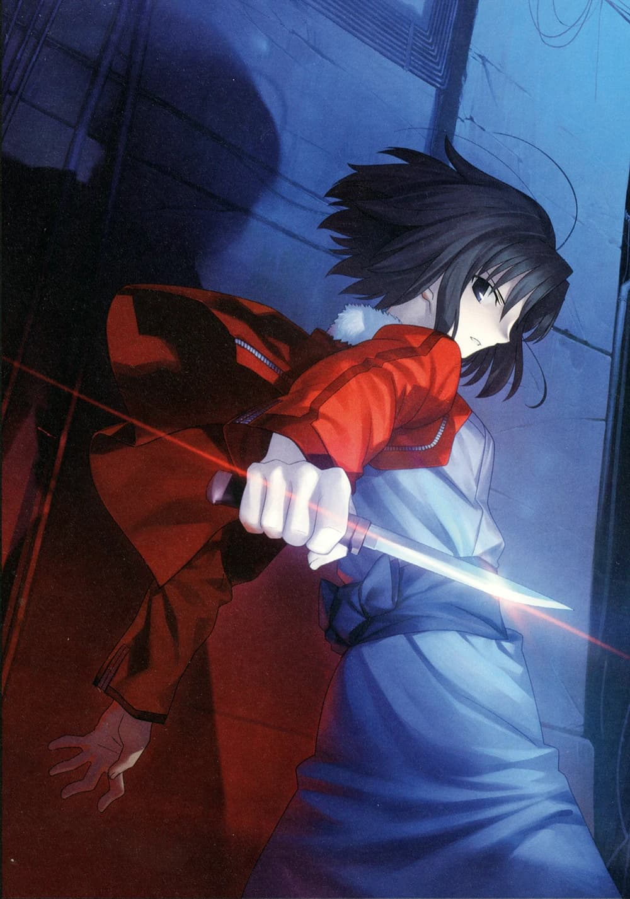

We didn't develop games for it yet. You can support us watching movie collections!
Fate/Samurai Remnant is a video game released in late September 2023. It is an action RPG developed by Koei Tecmo Games subsidiary Omega Force, with TYPE-MOON supervising the project. It is the fourth year of the Keian Era (1651) during the Edo PeriodWP, in a timeline designated for pruning. Lone swordsman, Miyamoto Iori, the adopted son of Miyamoto Musashi, is suddenly dragged into a hidden conflict known as the Waxing Moon Ritual. There, seven Masters and Servants fight over the "Waxing Moon" which could grant any and all wishes.
Fate/Grand Order (FGO) is a critically acclaimed mobile role-playing game developed by TYPE-MOON and published by Aniplex. Launched in 2015, FGO has become a global phenomenon, captivating players with its compelling narrative, diverse characters, and strategic gameplay. Set in the expansive 'Fate' universe, the game follows the protagonist, a Master, as they embark on a time-traveling journey to save humanity. FGO boasts stunning visuals, a rich storyline, and a unique summoning system to acquire powerful Heroic Spirits. With continuous updates and events, Fate/Grand Order continues to thrive as a pinnacle in the mobile gaming landscape, captivating fans worldwide.
Fate/EXTELLA (localized as Fate/EXTELLA: The Umbral Star) is a video game by Marvelous for PlayStation 4, PlayStation Vita, PC and Nintendo Switch. It takes place in the Fate/EXTRA and Fate/EXTRA CCC world. It was released in Japan on November 10, 2016 and in North America on January 17, 2017. The game was later re-released on Nintendo Switch on July 20, 2017 in Japan and in North America on July 25, 2017. Eventually, a mobile version was developed and made available in Japan for iOS and Android devices on July 22, 2020. It takes place after the Moon Holy Grail War, but in a slightly different continuity from the events shown in Fate/EXTRA. Details of the events preceding Fate/EXTELLA are presented in EXTELLA/zero, a text shared by Nasu on his blog.
Tsukihime -A piece of blue glass moon- is a visual novel by TYPE-MOON. It is the first title in the Tsukihime Remake series, acting as a remake of the two Near-Side Routes of Tsukihime featuring Arcueid Brunestud and Ciel. It was released on August 26, 2021 for PlayStation 4 and Nintendo Switch. An official English translation is scheduled to be released on 2024.
The world view of the long legendary visual novel "Moon" crafted by TYPE-MOON presents the latest work of the 2D fighting game series. The battle story woven together by the group of characters from Tsukihime -A piece of blue glass moon- is now about to be unveiled once again...